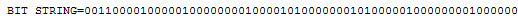

The ASN.1 dump functionality was improved in two aspects:
- More OIDs are resolved to their names.
- Encapsulated ASN.1 structures in BITSTRING and OCTETSTRING are now detected and displayed (see screenshots below).
KSE 4.1.1:

KSE 5.0: